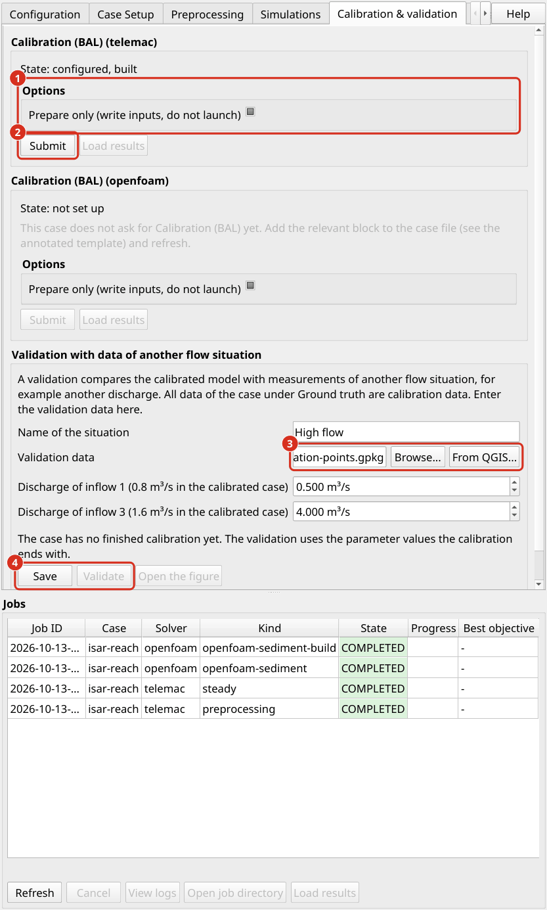

Kalibrierung und Validierung
Ein numerisches Modell enthält Parameter, die nicht direkt gemessen werden können, vor allem die Rauheit der Flusssohle. Kalibrierung passt diese Parameter an, bis das Modell Feldmessungen wiedergibt. Validierung testet dann das kalibrierte Modell mit Messungen, die nicht für die Kalibrierung verwendet wurden. aXqua führt beides mit HydroBayesCal durch.
In diesem Abschnitt werden zwei Begriffe verwendet. Kalibrierparameter sind die unsicheren Eingaben des Modells, die angepasst werden, zum Beispiel die Rauheit einer Zone. Kalibrierungsziele sind die gemessenen Größen, mit denen das Modell verglichen wird, beispielsweise die Wassertiefe an vermessenen Punkten.
Einführung in die Bayessche Kalibrierung
Eine Kalibrierung durch Versuch und Irrtum endet mit einem Satz von Parameterwerten und keiner Aussage darüber, wie zuverlässig diese Werte sind. Bayessche Kalibrierung beantwortet eine nützlichere Frage: Welche Parameterwerte sind angesichts der Messungen und ihrer Fehler wahrscheinlich?
Der Benutzer gibt für jeden Kalibrierparameter den Bereich an, in dem sein wahrer Wert erwartet wird. Dieser Bereich ist die A-priori-Verteilung. Bayes‘ Theorem kombiniert die A-priori-Verteilung mit den Messungen. Parameterwerte, mit denen das Modell die Messungen reproduziert, werden wahrscheinlicher und alle anderen werden weniger wahrscheinlich. Das Ergebnis ist die A-posteriori-Verteilung jedes Parameters. Eine enge A-posteriori-Verteilung zeigt an, dass die Messungen den Parameter gut bestimmen. Eine A-posteriori-Verteilung, die so breit ist wie die A-priori-Verteilung, zeigt an, dass die Messungen keine Informationen über diesen Parameter enthalten.
Die direkte Auswertung des Bayes-Theorems erfordert viele tausend Modellläufe, was für ein stundenlanges Modell nicht machbar ist. HydroBayesCal ersetzt das Modell daher in folgenden Schritten durch ein Ersatzmodell:
Das numerische Modell wird für eine begrenzte Anzahl von Parameterkombinationen ausgeführt, die über die A-priori-Verteilungsbereiche verteilt sind (standardmäßig 30).
Ein Gauß-Prozessemulator wird mit diesen Läufen trainiert. Der Emulator ist ein statistisches Modell, das das Ergebnis des numerischen Modells für jede Parameterkombination innerhalb eines Bruchteils einer Sekunde zusammen mit der Unsicherheit seiner eigenen Vorhersage vorhersagt (Rasmussen und Williams 2006).
Der Emulator wird für tausende Parameterkombinationen ausgewertet, um die A-posteriori-Verteilung zu berechnen.
Bayesisches aktives Lernen wählt die Parameterkombination aus, bei der ein zusätzlicher Durchlauf des numerischen Modells den Emulator am meisten verbessert. Das Modell wird für diese Kombination ausgeführt und der Emulator wird erneut trainiert (Oladyshkin et al. 2020).
Die Schritte 3 und 4 werden wiederholt, bis die ausgewählte Anzahl von Durchläufen erreicht ist (standardmäßig 50).
Auf diese Weise sind einige Dutzend Modellläufe ausreichend, wo eine direkte Bayessche Kalibrierung Tausende erfordern würde. Anwendungen auf Reservoirmodelle werden von Mouris et al. (2023) und Schwindt et al. (2023) dokumentiert.
Einrichtung von Referenzdaten
Feldmessungen werden als Referenzdaten bezeichnet. Wenn die Messungen noch nicht durchgeführt wurden, bestimmt das Umfrageplaner am Ende dieses Abschnitts, wo die Kalibrierung sie benötigt. aXqua akzeptiert Messungen in einer Arbeitsmappe mit einer festen Struktur, die als Kalibrierzielvorlage bezeichnet wird. Erstellen Sie es für einen Fall mit:
axqua targets <case-file>
Der Befehl schreibt die Arbeitsmappe calibration-target-data.xlsx in user-sources/ground-truth/. Seine Blätter sind:
Blatt |
Inhalt |
|---|---|
|
Eine Reihe pro Messpunkt: Geschwindigkeitskomponenten, ihre Schwankungen, Wassertiefe und Sohlhöhe. Die Geschwindigkeitsgröße und die turbulente kinetische Energie werden durch Formeln im Blatt berechnet. |
|
Korngrößen (d16 bis d90) und der Feinsedimentanteil je Probe. Der gemessene Bettwechsel wird automatisch aus dem DGM der Differenz (Morphodynamische Simulation) ausgefüllt. |
|
Der Kalibrierparameter mit seinen unteren und oberen Grenzen, ausgewählt aus einer Liste der verfügbaren TELEMAC- und GAIA-Parameter. |
Jede Zeile trägt eine ID. Die Positionen der Messungen werden von einem Punktlayer ausgelesen, der die gleichen IDs enthält, so dass Koordinaten nicht eingegeben werden müssen. Geben Sie das Arbeitsbuch und den Punktlayer im Falldatei ein:
ground_truth:
targets:
file: user-sources/ground-truth/calibration-target-data.xlsx
hydraulics_positions: user-sources/geodata/measurement-points.gpkg
sediment_positions: user-sources/geodata/sediment-samples.gpkg
join_key: ID
Wiederholen Sie dann die Preprocessing, die die Messungen in den Tabellen kompiliert, die die Kalibrierung liest. Die IDs müssen in einem Blatt eindeutig sein. Messungen von mehreren Erhebungstagen, deren Nummerierung bei Null neu gestartet wird, erfordern daher eindeutige IDs.
Es gibt zwei Alternativen zur Arbeitsmappe. ground_truth.measurements benennt eine Tabelle, die der Benutzer zusammengestellt hat, mit den Koordinaten x, y und z in den ersten drei Spalten und einer Spalte pro gemessener Größe. ground_truth.sources listet die Originalinstrumentendateien zusammen mit dem Punktlayer ihrer Positionen auf, die aXqua in einer solchen Tabelle zusammenstellt.
Messungen in einem Layer oder Tabelle. Wenn die Messwerte und deren Positionen bereits in einer Datei vorhanden sind, reicht diese aus. Betreten Sie es als Quelle der Art points:
ground_truth:
sources:
- category: hydraulics
kind: points
positions: user-sources/ground-truth/velocity-measurements.gpkg
Die Datei ist ein Punktlayer (GeoPackage, Shapefile oder GeoJSON) in einem beliebigen Koordinatenbezugssystem oder eine Tabelle (CSV-Datei oder Excel-Arbeitsmappe) mit den Spalten x und y im Koordinatenbezugssystem des Falls. aXqua erkennt die folgenden Spaltennamen in Groß- oder Kleinschreibung und mit oder ohne Einheit in eckigen Klammern oder Klammern, zum Beispiel v(x) [m/s] oder v_x (m/s):
Menge |
Spaltenbezeichnungen |
|---|---|
Koordinaten einer Tabelle |
|
Geschwindigkeitsanteile in m/s |
|
Wassertiefe insgesamt in m |
|
Tiefe einer Anzeige unterhalb des Wasserspiegels in m |
|
Die Geschwindigkeitsgröße, die mit dem Modell verglichen wird, wird aus den horizontalen Komponenten berechnet. Die Geschwindigkeit jeder Messhöhe wird bei 0,6 der Wassertiefe oberhalb der Flusssohle verglichen. Enthält eine Layer mehrere Messwerte an einer Stelle, unterhalb und oberhalb dieser Höhe, passt aXqua ein logarithmisches Geschwindigkeitsprofil zu den Messwerten an ihrer gemessenen Höhe und liest die Geschwindigkeit bei 0,6 der Wassertiefe oberhalb der Flusssohle von diesem Profil. Das Profil ist nicht über die Messwerte hinaus verlängert: jede andere Vertikale (ein einziges Lesen, Lesen alle unten oder alle über dieser Höhe, oder eine Geschwindigkeit, die nicht mit der Höhe wächst) wird durch seine am nächsten liegende Höhe dargestellt, die dort entlang eines logarithmischen Profils mit der Rauheit Länge seiner eigenen Messwerte bewegt wird, oder auch mit der median Rauheit Länge der gleichen Umfrage. Die Messtiefe einer Lesung (Meas. Depth eines FlowTrackers) zählt vom Wasserspiegel. Ein Messwert ohne aufgenommene Tiefe wird bei 0,6 der Wassertiefe oberhalb der Flusssohle aufgenommen und wie es ist verwendet. Punkte außerhalb der Modellgrenze werden aus der Kalibrierung gelassen, und so sind Punkte weniger als 15 Rechennetz Knoten von einer Zufluss- oder Ausfluss-Linie: dort ist der Fluss, was der Rand vorschreibt, nicht was der Fluss tut. aXqua nennt diese Punkte und der Rand sind sie in einer Warnung, die das Plugin zeigt, wenn die Ergebnisse der Arbeit geladen werden, zusammen mit der Abhilfe: Increase ROI beyond the concerned liquid boundary. Eine Modellgrenze, die Flussabschnitte weiter stromaufwärts oder stromabwärts als die Messungen hält sie vom Ränder weg. Im Plugin werden die Dateien in die Falleinstellungen eingetragen (Open case settings… an der Case Setup Registerkarte), Seite Calibration and validation, in der Tabelle Measurement files des Rahmens Measurements.*Add file…* fügt einen Punktlayer oder eine Tabelle hinzu und die Spalte Use for gibt jede Datei der Kalibrierung oder der Validierung zu. Eine Datei für die Validierung benötigt den Namen ihrer Abflusssituation und ihres Abflusses (Validierungssituation).
Geschwindigkeitsmessungen mit einem SonTek FlowTracker2 werden in das hydraulics Blatt mit dem Skript extract_flowtracker.py übertragen, das aXqua neben der Arbeitsmappe platziert. Beachten Sie, dass die Geschwindigkeitsschwankungen die Standardabweichung der Geschwindigkeitsproben sind. Es ist nicht die Spalte VxErr des Instrumentenexports, was der Standardfehler der mittleren Geschwindigkeit ist.
Der Umfrageplaner. Die Kalibrierung kann nur einen Parameter bestimmen, bei dem eine Messung darauf anspricht. Eine Rauheitszone ohne Messpunkt wird daher nicht kalibriert (Bayessche Kalibrierung und Validierung), und ein Turbulenzparameter wird durch Messungen in Scherzonen, nicht in der gleichmäßigen Strömung der Hauptgerinne, eingeschränkt. Der Umfrageplaner beantwortet vor der Feldarbeit zwei Fragen: Wo benötigt die Kalibrierung Messungen und wie lange dauert die Umfrage? Es platziert die Messungen in das Strömungsfeld des Modells, so dass es einen gebauten Fall und eine stationäre Simulation am Abfluss erfordert, die am Vermessungstag erwartet wird (Hydraulische Simulationen). Öffnen Sie es mit Survey planner… auf der Registerkarte Calibration & validation. Sein Fenster hat acht Registerkarten, die in beliebiger Reihenfolge besucht werden können:
Registerkarte |
Inhalt |
|---|---|
Survey |
Die zu planenden Umfragetypen, der Kalibrierparameter mit der Regel, die ihre Messungen festlegt, die Anzahl der Messungen pro Parameter und die zu planende Ergebnisdatei (der stetige Ablauf des Falls, es sei denn, eine andere Datei wird benannt). |
Access |
Die Punkte, an denen die Vermesser Flussabschnitt und den Fluss verlassen. Set points on the map erstellt |
Ground-based, Airborne, Kayak, Temperature |
Die Annahmen für jede Art von Umfrage, mit den unten beschriebenen Standardwerten. Jeder Wert kann geändert werden. |
Time and weather |
Der Erhebungstag und der Beginn des Arbeitstages (beide fakultativ), der längste Arbeitstag und die Pausen. Look up liest Sonnenaufgang, Sonnenuntergang, die Wettervorhersage und was über die Netzabdeckung im Flussabschnitt bekannt ist, und schlägt eine Startzeit vor. |
Plan |
Plan the survey Berechnet den Plan, fügt der Karte seinen Layer hinzu und listet die Karten und Factsheets auf, die mit einem Klick geöffnet werden. |
Der Planer liest den Kalibrierparameter aus der Falldatei und schlägt für jeden eine Platzierungsregel vor. Es listet auch jede Rauheitszone der Zonenkarte auf, die von der Kalibrierung nicht benannt wird. Eine solche Zone wird ausgewählt, wenn der Fall noch keinen Kalibrierparameter deklariert, und wird aufgeführt, ohne anderweitig ausgewählt zu sein. Parameter, die der Fall noch nicht erklärt, können hinzugefügt werden mit Add parameter…:
Regel |
Wo die Messungen durchgeführt werden |
|---|---|
inside a roughness zone |
Innerhalb einer Rauheitszone, verteilt über die Wassertiefen und Geschwindigkeiten, die darin auftreten. Dies ist die Regel jeder Rauheit-Parameters, der zu einer Zone gehört. |
over the wetted model |
Verteilung über das benetzte Modell, für einen Parameter, der auf den gesamten Flussabschnitt wirkt. |
in shear zones |
Wo sich die Geschwindigkeit über die Strömung am meisten ändert, wie die Ränder der Rezirkulationszonen. Dies ist die Regel der Turbulenzparameter. |
in bends |
Wo die Stromlinien am meisten gekrümmt sind. |
along the banks |
Entlang der Ufer, nahe der benetzten Kante. Eine feste Wand des Modells zählt als Bank, wo das Wasser es erreicht. |
in shallow margins |
In den flachen Rändern, die bei einem niedrigeren Abfluss trocken fallen. |
Keine Messung wird näher als 15 Rechennetzknoten an einem Zufluss oder Ausflussrand platziert, da der Fluss dort von der Randbedingung vorgegeben und nicht vom Modell berechnet wird. Pro Parameter sind standardmäßig sechs Messungen geplant.
Bodenbasierte Geschwindigkeitsmessung. Ein Vermesser watet vom Zugangspunkt zu jeder Messsenkrechten mit einer Geschwindigkeitssonde, beispielsweise einem SonTek FlowTracker2, und kehrt am Ende des Tages zum Zugangspunkt zurück. Der Planer platziert Vertikalen nur in Wasser, das gewatzt werden kann, ordnet die Vertikalen in eine kurze Runde und führt den Spaziergang auf einem Raster von 1 m Zellen mit den Wassertiefen und Fließgeschwindigkeiten des Ergebnisses. Gelände neben einem Fluss ist oft neben unpassierbar (Riffwald, Ripprap, steile Ufer, Privatland), und das Modell enthält keine Informationen darüber. Auf trockenem Boden bleibt die Wanderung somit innerhalb eines Streifens von 1 m entlang der benetzten Kante des Ergebnisses, also der benetzten Kante am Abfluss des Vermessungstages. Dies gilt für Schotterstäbe innerhalb des Modells und für die Banken außerhalb. Trockener Boden, der über den Streifen hinaus begehbar ist, wie eine Schotterbar, ein Pfad oder eine Wiese, wird als Polygon in der Layer walkable_areas (Registerkarte Access) gezeichnet; die Bereiche gelten nur für trockenen Boden und tragen den Spaziergang nicht über Wasser, das nicht benetzt werden kann. Ein Zugangspunkt, an dem sich weder der Streifen noch ein Bereich mit dem Wasser verbindet, wird durch eine gerade Linie mit dem nächsten begehbaren Boden verbunden, und der Plan gibt eine Warnung aus, wenn diese Linie länger als 10 m ist, da nichts darauf hinweist, dass sie begehbar ist. Der Streifen endet am Zufluss und Ausflussränder des Modells, wo der Fluss weitergeht, so dass der Spaziergang den Fluss nur dort überquert, wo das Ergebnis watbares Wasser zeigt. Die Ausfälle sind:
Annahme |
Ausfall |
|---|---|
Abfüllbares Wasser |
Bis zu einer Tiefe von 0,6 m nicht schneller als 2 m/s, bis zu 0,9 m nicht schneller als 1,4 m/s und bis zu 1,2 m nicht schneller als 1 m/s. |
Gehgeschwindigkeit |
3 km/h an Land und 1,5 km/h im Wasser mit der Strömung. Gegen den Strom 1 km/h in Wasser tiefer als 0,3 m, 0,5 km/h in Wasser tiefer als 0,5 m und 0,1 km/h in Wasser tiefer als 0,8 m. |
Trockener Boden |
Innerhalb von 1 m vom benetzten Rand und innerhalb der begehbaren Bereiche, nirgendwo sonst. Die Breite des Streifens ist die Einstellung On land, no farther from the wetted edge than auf der Registerkarte Ground-based. |
Zeit in der Vertikalen |
60 s für die Wassertiefe und für jede gemessene Tiefe 40 s, um die Sonde auf ihre Höhe und 60 s Geschwindigkeitsdurchschnitt einzustellen. |
Gemessene Tiefe |
Eine Tiefe im Wasser seichter als 0,3 m (bei 0,6 der Wassertiefe über der Flusssohle), zwei Tiefen von 0,3 m (0,2 und 0,8) und drei Tiefen von 0,5 m (0,2, 0,6 und 0,8). Die Karte zeigt die drei Arten von Vertikalen mit verschiedenen Symbolen. |
Drucksensor |
Der Drucksensor der Sonde wird zu Beginn und alle 4 h auf den Atmosphärendruck eingestellt. Die Karte zeigt wo. |
Positionen |
Ein zweiter Vermessungsmesser zeichnet die Position jeder Vertikalen mit einem DGPS-Rover auf, während die Geschwindigkeit gemessen wird. Die DGPS verzögert die Umfrage daher nur dann, wenn sie ihren Datenempfang verliert. |
Besichtiger |
Ein Landvermesser mit einer Sonde. Mit mehr Vermessern erhält jeder Vermesser einen eigenen Wanderweg, und der DGPS-Vermesser erhält einen separaten Pfad, der seine Vertikalen besucht. Es werden höchstens drei Sonden pro DGPS-Rover empfohlen. |
Arbeitstag |
höchstens 8 h, mit einer Pause von 10 min alle 2 h und von 30 min alle 4 h. Eine Umfrage, die nicht in einen Tag passt, wird am nächsten Tag vom Access Point aus fortgesetzt. |
Luftgeschwindigkeitsmessung. Eine Kameradrohne schwebt über dem Fluss und filmt Tracer auf dem Wasserspiegel. Partikelverfolgung oder Partikelbildgeschwindigkeit (PTV oder PIV) mit pXv verwandelt jedes Video in die Oberflächengeschwindigkeit des gefilmten Bereichs, so dass eine Schwebeposition viele Vertikalen ersetzt, auch wenn das Wasser zu tief oder zu schnell ist, um zu waten. Der Planer geht von einer DJI-Kameradrohne aus, bei der die Kamera gerade nach unten zeigt und plant die Schwebeflugpositionen, die Flughöhe über dem Wasserspiegel (40 m standardmäßig, maximal 120 m), die Überschrift des Rahmens, die Dauer jedes Videos (180 s), die Route und den Batteriewechsel. Das Factsheet listet die Koordinaten jeder Schwebeposition, die Flugeinstellungen, die Größe des Rahmens auf dem Wasser, die Größe eines Tracers in Pixeln und Hinweise auf Bodenkontrollpunkte und auf das Kalibrierfeld für die Objektivkorrektur auf. Beachten Sie, dass das Video die Geschwindigkeit des Wasserspiegels zeigt, die größer ist als die Tiefe-gemittelte Geschwindigkeit eines 2D-Modells.
Kayak-Drifter-Velocimetrie. Ein Kajak, das nicht gepaddelt ist, driftet mit der Geschwindigkeit des Wasserspiegels. Ein DGPS-Rover auf dem Kajak, der alle 5 s eine Position protokolliert, erfasst daher die Oberflächengeschwindigkeit entlang der Driftlinie: Nur die horizontale Position und der Abstand zwischen zwei aufeinanderfolgenden Positionen zählen (Barker et al. 2018). Der Planer benötigt einen Access Point und einen Leave Point. Es zeichnet Driftlinien durch das Strömungsfeld des Modells nach, berechnet die Dauer eines Schwimmers aus der modellierten Geschwindigkeit und markiert Patches, die schneller als 3 m / s sind, die zu vermeiden sind. Zwei Kajakfahrer sind aus Sicherheitsgründen standardmäßig; ein einziger Kajakfahrer schwimmt den Flussabschnitt zweimal. Eine Pause von 10 min ist alle 2 h geplant, und nur ein DGPS, der seine Verbindung verliert, verzögert einen Float. Die Methode ist für lange Flussabschnitte effizient, erfordert jedoch eine Sedimentaufnahme am Austrittsort und den Transport der Kajaks. Geschwindigkeiten, die an einigen Punkten mit einem ADV oder einem ADCP gemessen werden, beziehen sich auf die Oberflächengeschwindigkeit und die Tiefenmittelgeschwindigkeit und unterstützen die Validierung.
Wassertemperatur. Der Planer sortiert den benetzten Flussabschnitt in vier Arten von Wasser: langsam oder schnell (Grenze 0,2 m/s) und flach oder tief (Grenze 0,3 m). Langsames, flaches Wasser erwärmt sich innerhalb einer Stunde in der Sonne, während tiefes, schnelles Wasser die Temperatur des Flusses stromaufwärts trägt, so dass jede Art von Wasser, die auftritt, mindestens einen Punkt erreicht. Die Punkte sind entweder feste Logger, die im Fluss bleiben, oder die Messwerte einer mobilen Sonde, die von Punkt zu Punkt getragen wird. Der Spaziergang zu den Punkten folgt den Regeln der bodengestützten Vermessung, einschließlich des Streifens entlang der benetzten Kante und der begehbaren Bereiche.
Zeit, Wetter und Netzabdeckung. Ohne Startzeit beginnt der Zeitplan eines Plans um 00:00 Uhr und gibt die Dauer an. Mit dem Vermessungstag und Look up berechnet der Planer Sonnenauf- und -untergang für den Flussabschnitt, liest die Wettervorhersage von Open-Meteo und schlägt eine Startzeit vor, die den Arbeitstag bei Tageslicht und Regen und starkem Wind hält. Mit einem Umfragetag und einer Startzeit endet der Arbeitstag spätestens bei Sonnenuntergang, und eine Startzeit nach Sonnenuntergang wird abgelehnt, es sei denn, End before sunset when the day is known wird gelöscht. Für die Netzabdeckung werden die Abdeckungskarte der nationalen Regulierungsbehörde und die Echtzeitkorrekturdienste des DGPS für Deutschland, die Schweiz, Frankreich, Österreich, Italien, die Niederlande, die Tschechische Republik, Dänemark, Schweden, Kanada, China und die Vereinigten Zustände genannt. In der Schweiz liest sie auch das Coverage-Modell des Bundesamtes für Kommunikation am Flussabschnitt und überall zählt sie die Mobilmasten, die OpenStreetMap innerhalb von 5 km zeigt. Es gibt auch keine Messung der Rezeption auf dem Fluss, daher gibt jedes Factsheet an, woher seine Informationen stammen, und fordert die Vermesser auf, die Abdeckung vor der Umfrage zu überprüfen. Das Kontrollkästchen für den Look-up kann auf einem Computer ohne Internetzugang gelöscht werden; der Plan enthält dann nur Sonnenaufgang und Sonnenuntergang.
Der Plan. Plan the survey schreibt den Ordner axqua-case/calibration-validation/survey-plan/:
Datei |
Inhalt |
|---|---|
|
Das Layer, das QGIS zeigt: die Zugangspunkte, die begehbaren Bereiche, die Vertikalen ( |
|
Eine Karte pro Erhebungsart auf einem A4-Blatt. |
|
Eine Seite pro Umfrageart für das Feld: der Plan in Zahlen, der Zeitplan mit Start, Pausen und Ende, Sonnenaufgang, Sonnenuntergang und Wetter, die Netzabdeckung, die Annahmen und Hinweise für die Feldarbeit. |
|
Jede Zahl des Plans und die Annahmen, auf denen er basiert. Der Assistent beginnt mit den Annahmen des letzten Plans. |
Die Zugangspunkte und die begehbaren Bereiche werden beibehalten, wenn eine Umfrage erneut geplant wird; alle anderen Schichten werden ersetzt. Die Layer werden erst ersetzt, nachdem die Karten und Factsheets des neuen Plans gezeichnet wurden, so dass ein Plan, der fehlschlägt, den vorherigen Plan an Ort und Stelle lässt. Eine Art Umfrage, die nicht geplant werden kann, zum Beispiel eine Kajak-Umfrage ohne Urlaubspunkt, stoppt die anderen nicht und wird mit ihrem Grund aufgeführt. Der gleiche Plan ist unter Terminal verfügbar:
axqua survey init <case-file>
axqua survey plan <case-file> --kinds ground,kayak --date 2026-06-15 --start 08:00
Der Plan gilt für den Abfluss der Simulation, mit der er berechnet wurde. Führen Sie die stationäre Simulation erneut durch, wenn sich der Abfluss am Vermessungstag erheblich unterscheidet, und bewegen Sie eine Vertikale im Feld, wo das Wasser tiefer oder schneller als geplant ist. Nach der Erhebung werden die Messwerte und Positionen wie oben beschrieben als Referenzdaten eingegeben.
Bayessche Kalibrierung und Validierung
Der calibration-Block der Falldatei definiert, was mit welchen Messungen kalibriert wird:
calibration:
calibration_quantities: ["WATER DEPTH"]
extraction_quantities: ["WATER DEPTH", "SCALAR VELOCITY"]
measurement_error: 0.10 # used where no measured error is available
# init_runs: 32 # runs for the first training of the emulator (default: 10 per parameter, a power of two)
# max_runs: 100 # limit of the total number of runs (default: none, until the active learning converges)
parameters:
- {name: zone1, min: 0.05, max: 0.50} # ks of roughness zone 1 [m]
- {name: zone2, min: 0.10, max: 1.00} # ks of roughness zone 2 [m]
calibration_quantities sind die Kalibrierziele. Die Namen sind die der TELEMAC-Ergebnisvariablen: WATER DEPTH, SCALAR VELOCITY, TURBULENT ENERG. (erfordert das k-epsilon Turbulenzmodell) und CUMUL BED EVOL (erfordert GAIA).
parameters listet den Kalibrierparameter mit den Grenzen ihrer A-priori-Verteilungsbereiche auf. Der Name zone<N> bezieht sich auf die Rauheit der Zone N. Ein Name, der mit gaia beginnt, bezieht sich auf ein GAIA-Schlüsselwort, beispielsweise gaiaCLASSES SHIELDS PARAMETERS 1 für den kritischen Shields-Parameter der ersten Korngröße-Klasse. Parameter, die im parameters-Blatt der Arbeitsmappe ausgewählt werden, werden dieser Liste hinzugefügt.
Wählen Sie breite, aber physisch plausible Grenzen. Wenn sich die A-posteriori-Verteilung eines Parameters an einer seiner Grenzen ansammelt, liegt der wahre Wert wahrscheinlich außerhalb des Bereichs und die Kalibrierung muss mit einem größeren Bereich wiederholt werden.
Anzahl der Simulationen. Die Kalibrierung simuliert zunächst init_runs Parameterwerte, die über die A-priori-Verteilungsbereiche verteilt sind (das ursprüngliche Design) und trainiert das Ersatzmodell darauf. Das aktive Lernen fügt dann einen Satz pro Iteration hinzu. Wo der Falldatei keine init_runs setzt, verwendet aXqua 10 Sätze pro Kalibrierparameter, die Stichprobengröße, die Loeppky et al. (2009) für den ersten Entwurf eines Computerexperiments empfehlen, an das ein Gauß-Prozess angepasst ist, aufgerundet auf die nächste Potenz von zwei. Die Sätze werden aus einer Sobol-Sequenz gezogen, deren Punkte die Bereiche nur bei 16, 32, 64, 128 oder einer anderen Zweierpotenz gleichmäßig abdecken. Zwei oder drei Parameter erhalten somit 32 Anfangssätze und vier bis sechs Parameter 64. HydroBayesCal erweitert das ursprüngliche Design in Blöcken und prüft nach jedem Block, ob das Ersatzmodell ausreicht, wie gut es jede Simulation vorhersagt, auf die es nicht trainiert wurde, und ob die A-posteriori-Verteilung immer noch zwischen Blöcken wechselt (adaptive_init_runs). aXqua macht den ersten Block so groß wie die Regel, so dass das Design nie unter ihm bleibt; ein größeres init_runs im Falldatei ist die Grenze, bis zu der das Design wächst, wo die Prüfung fehlschlägt. Das aktive Lernen geht dann weiter, bis es konvergiert (siehe Did the active learning converge? unten), ohne eine Begrenzung der Anzahl der Iterationen, es sei denn, das Falldatei setzt max_runs. Bei einer Kalibrierung an mehreren Abflüssen wird jeder Satz einmal pro Situation simuliert, so dass 64 erste Sätze in drei Situationen 192 Simulationen sind. Ein Falldatei mit weniger Anfangssets als die Regel wird als Set kalibriert, mit einer Warnung in den Ergebnissen des Jobs. Die Nummern einer Kalibrierung werden an run-budget.json neben der HydroBayesCal-Konfiguration geschrieben.
Die Ausflussstufe als Kalibrierparameter. Die Ausflussstufe ergibt sich aus dem Rating des Ausfluss Querprofils (outflow_condition: stage_discharge) oder wird vorgeschrieben (elevation). Wenn der Wasserstand des Flussabschnitts durch eine Steuerung, die das Gelände-Modell nicht auflöst, oder durch eine stromabwärts des Modells gehalten wird, ist dieser Pegel zu niedrig und kein Rauheit innerhalb seines Bereichs hebt den Wasserstand an den Messpunkten an. outflow_offset fügt dem Kalibrierparameter das Ausflussniveau als Offset in Metern zum Niveau der Bewertung hinzu. Jede Situation hält das Rating auf ihrem eigenen Abfluss, und ein Offset wird für alle Situationen kalibriert, da eine Rauheit ist:
calibration:
outflow_offset: [0.0, 2.0] # range of the offset above the rating level [m]
aXqua schreibt die TELEMAC-Routine user_sl.f in den Ordner user_fortran des Modellordners, der Ordner HydroBayesCal umschreibt; ein Fall, dessen Benutzer Fortran-Ordner einen anderen Namen hat oder der eine eigene Routine USER_SL enthält, kann den Offset nicht kalibrieren. TELEMAC-2D ruft die Routine mit jedem vorgeschriebenen Wasserstand auf und fügt den Offset hinzu, der linear von 0 über die ersten 600 s eines Laufs angehoben wird, so dass ein Lauf aus dem stetigen Ergebnis nicht mit einem Schritt bei Auslass beginnt. Ein Kalibrierlauf vom stationären Ergebnis dauert somit 600 s länger und kein Lauf, der den Offset anwendet, dauert weniger als 1200 s, so dass der Offset angestiegen ist und sich der Flussabschnitt vor Ende des Laufs beruhigt hat. Der gebaute Steuerdatei des Fall wird nicht geändert: Eine Kalibrierung, die es ausführen würde, oder ein calibration.control_file führt eine Kopie namens calibration2d-offset.cas aus. HydroBayesCal setzt den Offset jedes Laufs in user_sl.f (Parameter f.OUTFLOW_OFFSET), und die Validierung läuft mit dem kalibrierten Offset. Der Survey planner platziert keine eigenen Punkte für den Offset, weil der Wassertiefen, der an jeder Vertikalen gelesen wird, ihn informiert. Im Inn Flussabschnitt KB15 lag der Wasserstand im Hauptgerinne bei den Punkten im September 2025 0,45 m unter dem gemessenen Wert; ein Ausfluss 1,31 m höher brachte ihn auf 1 cm, während sich der Wasserstand über dem Patch stromaufwärts nicht änderte. Der Offset ist noch nicht verfügbar für TELEMAC-3D, für die Ausfluss Bedingung normal_depth und für Ausfluss Linien ohne vorgeschriebene Ebene (free).
Die Energiesteigung am Auslass als Kalibrierparameter. Ein Offset bewegt die Abflusskurve bei jedem Abfluss um die gleiche Höhe nach oben. Wenn die Ausflussebene aus dem Rating des Ausfluss Querprofils stammt (outflow_condition: stage_discharge mit rating_method: section), kann die Ausflussebene stattdessen durch das Rating selbst kalibriert werden. Die Schnittbewertung ist die normale Tiefe des Schnittes: Keulegans Gesetz mit den Ks der Rauheitszonen und dem Betthang des Flussabschnitts. Ein Wasserstand, der von einer Steuerung stromabwärts des Modells gehalten wird, ist ein Backwater, und in einem Backwater ist der Energiehang am Auslass viel kleiner als der Betthang. outflow_slope fügt diesen Energiehang dem Kalibrierparameter als Bereich anstelle des Betthangs hinzu; das Fenster Calibration parameters (Kalibrierparameter) schreibt es:
calibration:
outflow_slope: [1.0e-5, 2.0e-3] # range of the energy slope at the outlet [-]
Die Routine user_sl.f hält dann das Ausfluss-Querprofil und löst die Bewertung für den Abfluss jedes Laufs (die Summe des PRESCRIBED FLOWRATES) an der abgetasteten Steigung. Der Pegel steigt um die Differenz zwischen der Normalstufe an dieser Steigung und an der Bettneigung des Flussabschnitts, über die gleiche 600 s Rampe wie der Offset. Eine Steigung wird für alle Situationen kalibriert, so dass das Ergebnis eine Stufe-Entladungskurve ist, und die Validierung erhält das Niveau dieser Kurve an ihrem eigenen Abfluss. HydroBayesCal tastet den Dezimallogarithmus der Steigung ab (Parameter f.OUTFLOW_LOG_SLOPE), da die Steigung mehrere Größenordnungen umfasst und der Kalibrierungsbericht die Steigung selbst anzeigt. Die Regeln des Offsets gelten (der Ordner user_fortran, nur TELEMAC-2D), und ein Fall kalibriert entweder den Offset oder die Steigung, nicht beides. Ein Fall mit einer eigenen Abflusskurve (boundaries.stage_discharge) kann die Steigung nicht kalibrieren, da ihre Ebenen nicht die normale Etappe des Abschnitts sind, und ein Lauf ohne vorgeschriebenen Abfluss stoppt mit einer Nachricht. Auf dem Inn Flussabschnitt KB15 benötigt das Ausflussniveau, das zu den September 2025 Punkten passt, 1,31 m über dem Rating von 54,3 m3/s, entweder eine Ks von 10,7 m im Ausflussabschnitt (a Manning’s n von 0,21, was keine Flussabschnitte sind) oder eine Energieschrägheit von 3,8 · 10−5 anstelle der Bettschrägheit von 2,0 · 10−3. Innerhalb der gemessenen Abflüsse (46 bis 55 m3/s) ergeben der Versatz und die Steigung Ebenen innerhalb von 12 cm voneinander; sie teilen sich nur an Abflüssen, die keine Messung abdeckt, wo keiner ohne einen gemessenen Wasserstand vertraut werden kann.
Das Fenster Kalibrierparameter. Die Kalibrierziele sind die gemessenen Größen, mit denen das Modell verglichen wird (Wassertiefe und Geschwindigkeit); die Kalibrierparameter sind, was die Kalibrierung variiert, so dass das Modell sie reproduziert. Auf der Registerkarte Calibration & validation öffnet das Feld Calibration parameters ein Fenster, das sie ohne Bearbeitung der Falldatei setzt. Seine vier Registerkarten können in beliebiger Reihenfolge besucht werden:
Registerkarte |
Inhalt |
|---|---|
Rauheitszonen |
Die Zonen der Rauheitstabelle mit ihren Bereichen und ob sie kalibriert sind. Die Bereiche und die Spalte |
Ausfluss |
Nicht kalibriert, die Energiesteigung am Auslass oder ein Offset des Ausflusspegels. Eine Option, die der Fall nicht nutzen kann, wird mit dem Grund ausgegraut, zum Beispiel eine Abflusskurve, die nicht die des Ausfluss Querprofils ist. Die Energiesteigung wird von 1·10−5 bis zur Bettneigung des Flussabschnitts angedeutet, die das Fenster zeigt. Show the outflow levels gibt für den Abfluss jeder Kalibriersituation das Niveau der Abflusskurve und den Bereich der Niveaus an, den der eingegebene Bereich einstellt; ein kleinerer Energiehang hält das Wasser höher. |
Weitere Parameter |
Parameter, die zum Fall passen, mit einem typischen Bereich: die Schlüsselwörter des TELEMAC-Moduls der Kalibrierung, die Leitfähigkeit eines Gain-Loss-Flussabschnitts und die GAIA-Koeffizienten eines Falls mit Sedimenttransport, die keine Klassennummer benötigen. Wählen Sie einen Parameter, um ihn zu kalibrieren, und passen Sie seinen Bereich an. Jeder Parameter kostet läuft: Eine Faustregel fordert zehn TELEMAC-Läufe pro Parameter. |
Sparen |
Was Save in den Block |
In einem Terminal listet axqua calibration my-reach.axq-case --parameters dasselbe auf und --slope 1e-5 2e-3 oder --offset -0.5 1.5 fügt die Ausflusspegel eines Bereichs hinzu.
Welche Rauheitszonen sind kalibriert? Bevor eine Kalibrierung beginnt, zählt aXqua die Kalibrierungspunkte in jeder Rauheitszone, die die Rauheitstabelle kalibriert (die Punkte, die die Kalibrierung verwendet, ohne diejenigen außerhalb des Modells oder in der Nähe einer Zufluss- oder Ausflusslinie). Ein Punkt zählt in der Zone, deren Rauheit das Rechennetz ihm gibt. Daraus ergeben sich zwei Regeln:
Eine Zone ohne Kalibrierpunkt ist nicht kalibriert. Die Messungen enthalten keine Informationen über seine Rauheit, so dass seine A-posteriori-Verteilung so breit bleiben würde wie seine A-priori-Verteilung, und der gemeldete Wert wäre eine Zahl, die die Daten nicht unterstützen. Die Zone behält den Wert des gebauten Modells, die Mitte seiner Reichweite.
Eine Zone, deren Wasser flacher als seine größten ks ist, erhält eine kleinere größte ks: Wenn der Median gemessen Wassertiefe an seinen Punkten unter
ks_maxliegt, wirdks_maxauf diese Tiefe gesenkt. Das logarithmische Reibungsgesetz von Nikuradse beschreibt eine Strömung, die viel tiefer ist als ihre Rauheit-Höhe. Bei einem relativen Eintauchen h/ks unter etwa 1, die Rauheit-Elemente Flussabschnitt durch einen Großteil der Wassersäule, und der Widerstand ist die Form ziehen diese Elemente, die das Gesetz nicht beschreibt. Unterhalb von ca. 0,09 h/ks begrenzt TELEMAC den Reibungskoeffizienten und drucktEXTREMLY HIGH VALUE OF FRICTION. Wenn der abgesenkte Grenzwert nicht überks_minliegt, wird die Zone nicht kalibriert.
Beide Regeln werden als Warnungen gemeldet und an zone-plan.json neben der HydroBayesCal-Konfiguration geschrieben. Im Plugin fragt Submit auf der Calibration & validation Registerkarte zuerst, wenn eine Zone ausgelassen oder ihre größte ks abgesenkt wird: Calibrate only zones … startet die Kalibrierung mit den aufgeführten Zonen, und Abort and check the ground truth in QGIS startet nichts und fügt die Rauheitszonen und die mit ihrer Zone gekennzeichneten Kalibrierungspunkte zur Karte hinzu. In einem Terminal listet axqua calibration <case-file> die Punkte, den Median der gemessenen Tiefe und die Entscheidung für jede Zone auf, ohne etwas zu beginnen. Auf dem Inn Flussabschnitt KB15 variierte die erste Kalibrierung die Zone 4, die keinen Messpunkt hat, und die Zone 1, die Hauptgerinne, mit einem Punkt; beide A-posteriori-Verteilungen blieben fast so breit wie ihre A-priori-Verteilungen.
Validierung. Eine Validierung prüft, ob die kalibrierten Parameter den Flussabschnitt oder nur den Tag beschreiben, an dem die Kalibrierdaten gemessen wurden. Sie erfordert daher Messungen, die die Kalibrierung nicht verwendet hat und die aus einer anderen Abflusssituation stammen: eine weitere Abfluss, gemessen in einer anderen Umfrage.
Alle Messungen des ground_truth Blocks sind Kalibrierungsdaten. aXqua hält keinen Teil davon für eine Validierung zurück. Die Messungen einer Vermessung werden innerhalb weniger Stunden in einem Strömungsfeld durchgeführt und benachbarte Punkte sind daher nicht unabhängig voneinander. Ein Modell, das einige dieser Punkte von den anderen vorhersagt (einzige Kreuzvalidierung, k-fache Kreuzvalidierung oder einen zufälligen Anteil), zeigt, dass es innerhalb dieses Flussfeldes interpoliert. Es zeigt nicht, dass seine Rauheit-Werte an einem anderen Abfluss gelten, an dem andere Teile des Bettes benetzt und andere Rauheit-Elemente untergetaucht sind.
Die Validierungsdaten werden im Falldatei als situation definiert, mit ihren Messungen und ihren Randwerten:
calibration:
validation:
- name: September 2025
inflows: {1: 0.2, 3: 5.1} # discharge [m3/s] per inflow of the model
sources:
- category: hydraulics
kind: points
positions: user-sources/ground-truth/september.gpkg
Eingang |
Bedeutung |
|---|---|
|
Ein kurzer Name der Situation. Es benennt die Dateien der Validierung. |
|
Die Messungen, in Form der Quellen des |
|
Der gesamte Abfluss der Situation in m3/s. Bei einem Modell mit mehreren Zuflüssen wird der Abfluss unter ihnen in den Proportionen des kalibrierten Falls verteilt. |
|
Der Abfluss jedes Zuflusses in m3/s, für einen Flussabschnitt, dessen Zweige einen anderen Anteil des Flusses trugen. Die Zuflüsse werden durch die Nummer ihres täters Rand identifiziert. |
|
Der Wasserstand am Ausfluss in m, für einen Fall mit |
|
Die simulierte Zeit in Sekunden, wenn sie sich von der des Falls unterscheidet. |
Im Plugin. Die Registerkarte Calibration & validation hat die Box Validation with data of another flow situation. Wählen Sie den Punktlayer mit den Validierungsdaten mit Browse… oder mit From QGIS… aus dem Punktlayer, die in QGIS geöffnet sind. Geben Sie den Abfluss jedes Zuflusses ein: Das Feld listet die Zuflüsse des Modells mit dem Abfluss des kalibrierten Falls auf. Save schreibt die Situation in die Falldatei. Die gleichen Situationen erscheinen in den Falleinstellungen (Open case settings…, Seite Calibration and validation): In der Tabelle Measurement files, jede Datei, deren Spalte Use for sagt, dass Validation zu der in der Spalte Situation genannten Situation gehört, mit dem Abfluss dieser Situation. Der Abfluss gehört zur Situation, so dass eine Änderung in einer Zeile sie in jeder Zeile dieser Situation ändert, und ein Pfad in den Spalten File und Positions kann an Ort und Stelle korrigiert werden. Einstellungen einer Situation, die die Tabelle nicht zeigt, wie der Abfluss jedes Zuflusses, werden beibehalten.
Lauf HydroBayesCal
Die Kalibrierung erfordert das zusätzliche Paket HydroBayesCal (QGIS Plugin) und einen gebauten Fall mit einer abgeschlossenen stationären Simulation. Jeder Lauf der Kalibrierung wiederholt diese stationäre Simulation mit einem anderen Satz von Parameterwerten.
Klicken Sie im Plugin auf Submit auf der Calibration & validation Registerkarte. Die Option Prepare only schreibt alle Eingabedateien, ohne die Runs zu starten, so dass sie zuerst inspiziert werden können. In einem Terminal:
axqua submit <case-file> --kind calibration --option prepare_only=true
axqua submit <case-file> --kind calibration


Das Registerkarte Calibration & validation für ein Fall mit Messungen. (1) Die Option Prepare only. (2) Submit startet die Kalibrierung. (3) Die Messungen der Validierungssituation, ausgewählt als Datei oder von Layer, die in QGIS geöffnet sind, und darunter der Abfluss von jedem Zufluss in dieser Situation. (4) Save speichert die Validierungssituation in Falldatei und Validate betreibt sie.
Die Rechenzeit ist ungefähr die Anzahl der Durchläufe mal die Dauer einer stationären Simulation, mal die Anzahl der Situationen bei einer Kalibrierung an mehreren Abflüssen. Ohne max_runs ist die Anzahl der Läufe nur bekannt, wenn das aktive Lernen konvergiert ist. Die Jobliste zeigt die Anzahl des aktuellen Parametersatzes und die Stufe und bei einer Kalibrierung an mehreren Abflüssen die laufende Situation, zum Beispiel run 11/64, initial design, September 2025 (2/3). Die Zahl nach dem Schrägstrich ist max_runs; ohne eine ist es die Größe des ursprünglichen Designs, während das läuft, und keine Zahl folgt während des aktiven Lernens.
Starten Sie jeden Lauf aus dem stetigen Ergebnis. Standardmäßig wiederholt jeder Durchlauf die stationäre Simulation von ihrem trockenen oder vorbenetzten Start, so dass der größte Teil ihrer Rechenzeit für das Füllen des Flussabschnitts aufgewendet wird. Mit hotstart: true setzt sich jeder Lauf stattdessen vom konvergierten Ergebnis der stationären Simulation (r2d.slf) fort, und der Fluss muss sich nur auf die getesteten Rauheit-Werte einstellen:
calibration:
hotstart: true
hotstart_duration: 2500 # simulated time of each run [s]; optional
Die Steuerdatei dieser Läufe ist calibration2d.cas, was aXqua von dem gebauten steady2d.cas ableitet. Jeder Durchlauf schreibt seine eigene Ergebnisdatei, so dass das stetige Ergebnis nicht überschrieben wird. Ohne hotstart_duration dauert jeder Lauf das 1,2-fache der Verweilzeit des Flussabschnitts. Die Verweilzeit ist das Wasservolumen im stetigen Ergebnis geteilt durch den Abfluss, also die Zeit, in der der Flussabschnitt einmal sein Wasser austauscht. Auf dem Inn Flussabschnitt KB15, mit der Rauheit aller kalibrierten Zonen an der unteren oder oberen Grenze ihrer Reichweiten, hatte sich der Fluss nach dieser Zeit (3.000 s) beruhigt und jeder Lauf dauerte 17 bis 29 Minuten auf 16 Kernen statt 56 Minuten vom Trockenstart. Gleiches gilt, wenn sich der Abfluss eines Laufs von dem des stetigen Ergebnisses unterscheidet: Beginnend mit dem Ergebnis bei 54,3 m3/s, Läufe bei 45,8 und 55,4 m3/s, wobei die Rauheit an den Grenzen der Bereiche ihr Wasservolumen nach ca. 2.400 s innerhalb von 0,05 % hielt, während 1,2 Verweilzeiten bei 3.500 und 2.900 s liegen. Wenn die Kalibrierung den Ausflusspegel variiert (outflow_slope oder outflow_offset), ist die Verweilzeit die des Flussabschnitts, der auf den höchsten Ausflusspegel des Bereichs gefüllt ist, als Pegelpool über das stetige Ergebnis und die 600 s, über die der Pegel ansteigt, hinzugefügt werden: Ein erhöhter Ausflusspegel unterstützt das Wasser durch den Flussabschnitt, und der Lauf hat sich erst dann beruhigt, wenn dieses größere Volumen ausgetauscht wurde. Auf KB15 erhöht die kleinste Energiesteigung des Bereichs den Ausfluss um bis zu 2,2 m, der Flussabschnitt hält dann statt 134.000 m3 bis zu ca. 267.000 m3. Testläufe mit diesem Ausflussniveau, fortgesetzt auf 9.000 s, hatten sich innerhalb der so abgeleiteten Zeiträume beruhigt: Bei 55,4 m3/s mit dem größten Rauheit (6.200 s) lag die Geschwindigkeit an den 68 Kalibrierpunkten nach 5.300 s innerhalb von 0,8 cm/s von ihrem Endwert und nach 6.600 s innerhalb von 0,2 cm/s, gegenüber bis zu 4.4 cm/s nach den 3.500 s eines früheren Versuchs; bei 45,8 m3/s mit dem kleinsten Rauheit (6.600 s) blieb das gespeicherte Volumen ab 3.800 s innerhalb von 0,1 % seines Endwertes. Allein mit dem Volumen des stetigen Ergebnisses endeten 49 der 150 Durchläufe einer Versuchskalibrierung, wobei Zufluss und Ausfluss über ihre letzten 500 s im Durchschnitt mehr als 0,1 % auseinander lagen, bis zu 5,4 %. Der Kalibrierbericht gibt für jeden Lauf an, ob er innerhalb der Toleranz des Falls endete (run_balance in calibration-report.json), gelesen aus den Listen des Kalibrierauftrags. Ein Lauf zählt als abgerechnet, wenn sich das im Flussabschnitt gespeicherte Volumen um weniger als die Toleranz des Zuflusses ändert, gemessen am Trend des gespeicherten Volumens über das letzte Drittel des Laufs (mindestens 500 s). Ein kürzeres Fenster reicht nicht aus, denn bei einer kleinen Rauheit wird die simulierte Strömung nicht vollständig stabil. Die Bettreibung dämpft dann keine großen horizontalen Strömungsstrukturen mehr, wie z.B. die Rezirkulationsströmung in einem Becken, die um ein Vielfaches breiter als die Tiefe sind und daher durch die Tiefengemittelten Gleichungen anstelle des Turbulenzmodells (Chu et al. 1991) aufgelöst werden, und das gespeicherte Volumen schwingt: auf KB15 bei 45,8 m3/s bei kleinster Rauheit um ±134 m3 mit einer Periode von ca. 1.700 s, so dass Zufluss und Ausfluss des abgesetzten Laufs sich über 500 s durchschnittlich um bis zu 1,2 % unterschieden, während der Trend über das letzte Drittel unter 0,13 % blieb. Ein Lauf, der nur knapp über die Toleranz hinausgeht und einen großen Swing hat (swing in run_balance) kann daher noch abgewickelt werden. Die Option erfordert eine stationäre Simulation, die auf dem aktuellen Rechennetz ausgeführt wurde und einen stationären Zustand erreichte; aXqua lehnt ein Ergebnis eines früheren Builds ab. Im Plugin sind die Optionen Start each simulation from the steady result und Simulated time of each simulation in den Falleinstellungen, Seite Calibration and validation.
HydroBayesCal führt seine Läufe im Ordner des gebauten Falls aus (axqua-case/simulation/) und schreibt jeden getesteten Satz von Parameterwerten in den Friktionstisch und den dortigen Steuerdatei. aXqua stellt beide Dateien nach Beendigung der Kalibrierung wieder her, so dass eine spätere Simulation den Fall so verwendet, wie er gebaut wurde. Aus dem gleichen Grund laufen Jobs von einem Fall nach dem anderen: Ein Job, der während einer Kalibrierung eingereicht wird, wartet, bis die Kalibrierung beendet ist. Der Ordner cases/example-isar/ des Repositorys enthält ein vollständiges Beispiel mit einer Laufzeit von etwa einer halben Stunde, einschließlich einer Schritt-für-Schritt-Anleitung für das Plugin.
Validierungslauf. Klicken Sie nach der Kalibrierung auf Validate in der Box Validation with data of another flow situation oder senden Sie den Job in einem Terminal:
axqua submit <case-file> --kind validation
Die Validierung führt das kalibrierte Modell mit den Randwerten der Validierungssituation aus. Sein Steuerdatei leitet sich von dem des gebauten Falls ab und unterscheidet sich nur in den vorgeschriebenen Abflüssen und Wasserständen, in den Namen der eigenen Ergebnisdateien und in den kalibrierten Parameterwerten. Das Rechennetz und alle anderen Einstellungen sind die des kalibrierten Modells, so dass ein Unterschied zwischen Modell und Messung nicht von einem Modell herrühren kann, das anders gebaut wurde. Der Lauf beginnt so, wie die Kalibrierungsläufe begonnen haben: vom trockenen oder vorbenetzten Beginn des gebauten Falls oder, mit hotstart: true, vom stetigen Ergebnis für 1,2 Verweilzeiten am Abfluss der Validierungssituation. Die kalibrierten Werte sind die pro Parameter A-posteriori-Verteilung Maxima der letzten Kalibrierung: Für jeden Parameter wird der höchste Balken des Histogramms seiner A-posteriori-Verteilung Samples angezeigt, wie posteriors.png des Kalibrierungsberichts zeigt. Eine Rauheitszone, die die Messungen nicht bestimmen, kann nach der Kalibrierung fixiert werden: Setzen Sie calibration auf False dafür in der Rauheitstabelle, und die Validierung verwendet ihre nominalen ks (die Spalte ks, sonst die Mitte ihres Bereichs) anstelle des kalibrierten Wertes. Die Dateien des gebauten Falls und das Ergebnis der stationären Simulation werden nicht verändert.
aXqua liest dann das Modell an den Validierungspunkten und schreibt drei Dateien in axqua-case/calibration-validation/validation/: eine Tabelle mit dem gemessenen und dem modellierten Wert an jedem Punkt (validation-<name>.csv), eine Zusammenfassung (validation-<name>.json) und eine Zahl des modellierten gegen die gemessenen Werte (validation-<name>.png). Messpunkte außerhalb des Modells werden gezählt und ausgeschlossen, und Punkte mit weniger als 15 Rechennetzknoten aus einer Zufluss- oder Ausflusslinie werden mit der gleichen Warnung wie bei der Kalibrierung ausgelassen.
Mehrere Abflüsse. Rauheit-Werte, die an einem Abfluss kalibriert wurden, sind nicht unbedingt an einem anderen gültig. Messungen mehrerer Erhebungen an unterschiedlichen Abflüssen können somit gemeinsam kalibriert werden. Jede Umfrage ist eine Kalibrierungssituation, beschrieben wie eine Validierungssituation, mit einem Namen, seinen Messungen und seinem Abfluss:
calibration:
situations:
- name: August 2026
prescribed_flowrate: 55.4 # [m3/s]
sources:
- category: hydraulics
kind: points
positions: user-sources/ground-truth/KB15_Aug26.gpkg
- name: November 2025
prescribed_flowrate: 47.8
sources:
- category: hydraulics
kind: points
positions: user-sources/ground-truth/KB15_Nov25.gpkg
Bei Situationen wird jeder getestete Satz von Parameterwerten am Abfluss jeder Situation simuliert, und HydroBayesCal passt einen gemeinsamen Satz an die Messungen aller an. Messungen unter ground_truth verbinden sich als eine weitere Situation am Abfluss des Falls. Jede Situation erhält ihre eigene Steuerdatei steady2d-<name>.cas, die sich vom gebauten Fall nur in den vorgeschriebenen Abflüssen, dem Ausfluss-Wasserstand, dem Namen ihrer Ergebnisdatei und, mit hotstart: true, am Anfang vom stetigen Ergebnis für 1,2 Verweilzeiten am Abfluss der Situation unterscheidet. Der Ausfluss Wasserstand und die Verteilung auf mehrere Zuflüsse folgen den Regeln einer Validierungssituation. Die Eingabe- und Ergebnisdateien gehen an axqua-case/calibration-validation/multiflow/. Die Rechenzeit wächst mit der Anzahl der Situationen, weil jeder Lauf für jeden von ihnen wiederholt wird.
Fügen Sie im Plugin die Dateien in der Tabelle Measurement files (Falleinstellungen, Seite Calibration and validation) hinzu, wählen Sie Calibration in der Spalte Use for aus und geben Sie den Namen der Situation und ihren Abfluss ein. Eine Datei der Kalibrierung ohne Situationsname wurde am Abfluss des Falls gemessen.
Das Ersatzmodell von HydroBayesCal ist standardmäßig ein Gauß-Prozessemulator mit mehreren Ausgängen: Für jeden Messort prognostiziert ein Emulator die Wassertiefe und die Geschwindigkeit zusammen, einschließlich ihrer Korrelation (multitask_selection: variables). SO_sequential schult stattdessen unabhängige Single-Output-Emulatoren.
Zeigt an, dass das Modell nicht reproduziert werden kann. Ein Messwert, den kein Parameterwertsatz innerhalb der Bereiche wiedergibt, kann die Kalibrierung nicht beeinflussen, entscheidet aber allein mit seinem Messfehler über die Wahrscheinlichkeit: Jeder getestete Satz verfehlt ihn um den gleichen großen Betrag, und die A-posteriori-Verteilung ruht dann auf den wenigen Sätzen, die ihn am wenigsten verfehlen. Auf dem Inn Flussabschnitt KB15 war die Wassertiefe an den Punkten November 2025 in allen 16 Erstsimulationen 17 bis 38 cm zu niedrig und die Geschwindigkeit dort 0,11 bis 0,54 m/s zu hoch, weil das Gelände-Modell den Wasserstand des Pools nicht hochhält; HydroBayesCal nahm 1 von 60.000 A-priori-Verteilungsmustern entgegen. Mit structural_error: unreachable führt aXqua HydroBayesCal in zwei Durchgängen aus. Der erste Durchgang führt nur die ersten Simulationen durch. aXqua vergleicht dann für jeden Punkt und Ziel den Messwert mit dem Bereich der simulierten Werte; wenn der Wert außerhalb des Bereichs liegt, wird der Abstand zum Bereich zum Fehler dieses Punktes und Ziels addiert (als Wurzel der Summe der Quadrate). Eine Gruppe von Punkten kann immer noch innerhalb des simulierten Bereichs liegen, ohne dass ein Satz alle erreicht. aXqua nimmt daher die erste Simulation, die allen Situationen und Zielen am besten entspricht, und berechnet für jede Situation und jedes Ziel das Chi-Quadrat pro Punkt bei dieser Simulation (der quadrierte Außenseiter geteilt durch die Varianz, die HydroBayesCal verwendet, gemittelt über die Punkte). Wo es 1 überschreitet, werden die Varianzen dieser Punkte damit multipliziert, so dass die Gruppe nur so viel zählt, wie das Modell passen kann. Auf KB15 galt dies vor allem für die Geschwindigkeiten vom August 2026 (Faktor 10,1) und März 2026 (Faktor 8,0); die anderen Erhebungen und Ziele lagen zwischen 0,9 und 1,3. Der zweite Durchgang trainiert den Emulator auf den gespeicherten Simulationen und führt das aktive Lernen mit diesen Fehlern durch. Ein Punkt, an dem das Modell Flussabschnitte in einer Gruppe, in die das Modell passt, seinen Messfehler behält, so dass es vollständig zählt:
calibration:
structural_error: unreachable # none (default): every point keeps its measurement error
The errors and their parts are written to model-error-<name>.csv next to the calibration points, with the measured value, the measurement error, the smallest and largest simulated value, the misfit that remains, the value of the best initial simulation, the factor on the variance and the combined error. With these errors the posterior is wider, but it can still be narrow compared to the ranges: HydroBayesCal keeps a prior sample with a probability equal to its likelihood divided by the largest likelihood, and on KB15 it kept 1,006 of 60,000 prior samples (1.7 percent). Raise calibration.prior_samples (default 5,000) when the log reports few accepted samples; HydroBayesCal needs approximately 200. The sufficiency check of the initial design in the first pass still uses the measurement errors, so it may extend the initial design further than necessary. In the plugin, the setting is Model error at points the simulated flow cannot reach in the case settings, page Calibration and validation. The calibration option Continue from the saved initial simulations (--option resume=true for axqua submit) starts with the second pass and uses the initial simulations of an earlier calibration of the case.
Das Skript run_Bayes_cal_multiflow.py im Fallordner ist der ältere Weg zur gleichen Kalibrierung, wobei die Messungen jedes Abfluss im Skript aufgeführt sind. Führen Sie es mit --smoke zuerst. Dieser kurze Test mit drei Durchläufen überprüft die gesamte Kette, bevor Tage der Rechenzeit verbracht werden.
OpenFOAM. Die Box Calibration of the OpenFOAM model (BAL) unter Registerkarte Calibration & validation (Job openfoam-calibration) kalibriert das Bett Rauheit ks des OpenFOAM-Modells und optional die k-Epsilon-Koeffizienten wie Cmu (calibration.parameters). Es verwendet die gleichen Kalibrierungssituationen wie die TELEMAC-Kalibrierung und passt einen Parametersatz an alle an. Eine Kalibrierung benötigt Dutzende von Läufen, also laufen sie auf einem groben Rechennetz (cell_size_factor 4) unter einem starren Deckel, der dem Wasserspiegel eines TELEMAC-Laufs bei Abfluss jeder Situation folgt. Der Job führt diese TELEMAC-Läufe zuerst mit den kalibrierten TELEMAC-Werten aus, wenn der Fall eine TELEMAC-Kalibrierung hat (Rauheitszonen und die Energiesteilheit bei Auslass) und verwendet sie erneut, solange sich diese Werte nicht ändern. Diese TELEMAC-Läufe verwenden die Anzahl der Prozesse des TELEMAC Fall, und das OpenFOAM-Modell einer Situation wird immer dann neu erstellt, wenn der TELEMAC-Lauf wiederholt wird. Eine Situation, die jeder Zufluss Linie ihre eigene Abfluss gibt, wird nur akzeptiert, wenn diese Abflüsse die Proportionen der Target flow der Linien behalten, weil das OpenFOAM-Modell die Abfluss einer Situation in diesen Proportionen teilt. Die gemessene Größe ist die horizontale Fließgeschwindigkeit bei 0,6 des Wassertiefe über dem Flusssohle (U_MAG): Die Geschwindigkeitskomponenten eines FlowTrackers werden im Rahmen der Sonde angegeben, der in den lokalen Fluss an jeder Vertikalen umgewandelt wurde, so dass sie nicht mit den Ost- und Nordkomponenten des Modells verglichen werden können, und die vertikale Komponente ist hauptsächlich die Neigung der Sonde. Punkte außerhalb des Modells und in der Nähe einer Zufluss oder Ausfluss Linie werden ausgelassen, wie bei TELEMAC. Die Option Smoke test läuft drei kurze Läufe pro Situation und testet die gesamte Kette in Minuten. Die Ergebnisse werden an axqua-case/calibration-validation/openfoam/multiflow/ geschrieben. Der Rauheit eines OpenFOAM-Modells ist ein Wert für das gesamte Bett, daher ist er nicht vergleichbar mit den Rauheit-Werten pro Zone einer TELEMAC-Kalibrierung. In der Box Validation with data of another flow situation führt das Modell OpenFOAM das kalibrierte OpenFOAM-Modell in der Validierungssituation (Job openfoam-validation), mit den Einstellungen der Kalibrierungsläufe oder mit Production model with a free surface, mit der eigenen Auflösung von Fall und einem freie Oberfläche aus, was der starre Deckel ausgelassen hat. Die Kalibrierung bei mehreren Abflüsse erfordert HydroBayesCal 1.15.0 oder neuer. Das Skript run_Bayes_cal_openfoam.py eines Fall-Ordners bleibt der Weg, um die Geschwindigkeitskomponenten mit einer ADV-Umfrage in einem festen Rahmen zu kalibrieren.
Qualitätsanalyse
HydroBayesCal schreibt seine Ergebnisse in den Ordner auto-saved-results-HydroBayesCal innerhalb axqua-case/calibration-validation/ (multiflow/ für Kalibrierungssituationen). Nach einer erfolgreichen Kalibrierung schreibt aXqua einen Bericht in den Ordner report daneben:
Datei |
Inhalt |
|---|---|
|
Für jeden kalibrierten Parameter die A-priori-Verteilung (seine Reichweite) und die A-posteriori-Verteilung der letzten Iteration, wobei der kalibrierte Wert markiert ist, und eine Zeile, in der die Anzahl der Kalibrierpunkte in der Zone angegeben ist und ob die A-posteriori-Verteilung schmal, nicht identifizierbar oder an einer Grenze ihrer Reichweite liegt. |
|
Eine Karte aller Rauheitszonen mit ihren ks (kalibriert, fixiert oder ausgelassen), den Kalibrierpunkten und den Zufluss- und Ausflusslinien in den Farben von |
|
Der Bayes-Modellnachweis und die relative Entropie über die Parametersätze der Kalibrierung, mit dem Urteil, ob das aktive Lernen konvergiert ist (Schritt 1 unten). |
|
Die Rauheitszonen mit ihren Ks in cm, ihrem Status und einem Label. Load results fügt dieses Layer zu QGIS hinzu, gekennzeichnet mit der Zone und ihren Ks. |
|
Die Zahlen der Zahlen: kalibrierte Werte, glaubwürdige Intervalle, Varianzreduktion, die Flags von HydroBayesCal und die Entscheidung für jede Zone. |
Beurteilen Sie eine Kalibrierung in vier Schritten:
Hat sich das aktive Lernen angenähert? HydroBayesCal zeichnet nach jeder Iteration zwei Indikatoren auf. Der Bayessche Modellnachweis (BME) drückt aus, wie gut das Modell die Messungen im Durchschnitt über die Parameterbereiche reproduziert. Die relative Entropie (RE) gibt an, wie viele Informationen die Messungen der A-priori-Verteilung hinzugefügt haben. Das aktive Lernen hat sich angenähert, wenn beide ein Plateau erreichen (Oladyshkin et al. 2020). aXqua beurteilt das Plateau der letzten fünf Iterationen, wie Mouris et al. (2023) es taten: Weder der natürliche Logarithmus des BME noch des RE dürfen sich um mehr als 1 ändern. Beide werden in derselben Einheit gemessen, und eine Änderung der Beweise um weniger als einen Faktor von e ist „nicht mehr wert als eine bloße Erwähnung“ (Kass und Raftery 1995). Ein Plateau zählt erst nach mindestens 25 Iterationen des aktiven Lernens: Frühere neigen dazu, falsch zu sein, und in den hier zitierten Studien begannen Drei-Parameter-Kalibrierungen nach 25 Iterationen (Oladyshkin et al. 2020; Schwindt et al. 2023) und eine Vier-Parameter-Kalibrierung nach 46 (Mouris et al. 2023).
evidence.pnggibt das Urteil an und schattiert die fünf Iterationen, auf denen es ruht. Standardmäßig (Run the active learning until it converges,until_converged: true) führt aXqua die 25 Iterationen aus und fährt dann in Schritten von fünf Iterationen fort, jeweils aus allen bisher gespeicherten Simulationen, bis das Plateau hält. Die Anzahl der Iterationen, die dies erfordert, ist im Voraus nicht bekannt, und aXqua setzt keine Grenzen: einmax_runsim Falldatei ist der einzige. Ab der 25. Iteration prüft aXqua bei jedem Schritt, ob sich die beiden Indikatoren überhaupt einpendeln. Es vergleicht, wie viel jede variierte in den letzten fünf Iterationen mit, wie viel es variiert über die früheren Fenster von fünf Iterationen. Wenn ein Indikator um mehr als 1 und nicht weniger als über einem typischen früheren Fenster (dem Median) variiert, zeigt die Kalibrierung kein Anzeichen eines Plateaus, und eine Warnung in den Ergebnissen des Jobs sagt dies, während das aktive Lernen fortgesetzt wird. Häufige Ursachen sind ein zu enger Parameterbereich und Messungen, die kein Parameterwertsatz wiedergibt. Beiuntil_converged: falseläuft die Kalibrierung genaumax_runsSimulationen (standardmäßiginit_runsplus 50). Eine Kalibrierung, die untermax_runsabgebrochen oder gestoppt wurde, wird von allen gespeicherten Simulationen mit der Option Continue the active learning from all saved simulations der Box Calibration fortgesetzt (Joboptionextend).Ist die A-posteriori-Verteilung schmaler als die A-priori-Verteilung? Vergleichen Sie die beiden Verteilungen jedes Parameters. Eine A-posteriori-Verteilung, die deutlich schmaler als die A-priori-Verteilung ist und innerhalb des Bereichs liegt, identifiziert den Parameter. Eine A-posteriori-Verteilung an einer Grenze des Bereichs erfordert eine größere Reichweite. Eine A-posteriori-Verteilung, die der A-priori-Verteilung ähnelt, bedeutet, dass die Messungen diesen Parameter nicht einschränken.
Reproduziert das kalibrierte Modell die Kalibrierziele? Der kalibrierte Wert jedes Parameters ist der Peak seiner eigenen A-posteriori-Verteilung (das Maximum der A-posteriori-Verteilung pro Parameter): der höchste Balken des Histogramms in
posteriors.png, verfeinert auf den Mittelwert der Samples in diesem Balken. Die Anzahl der Balken ergibt sich aus der Anzahl der Proben der A-posteriori-Verteilung, so dass ein Balken nicht allein zufällig größer ist als seine Nachbarn. Die wahrscheinlichste Kombination aller Parameter, das gemeinsame Maximum, wird daneben incalibration-report.jsonberichtet. HydroBayesCal vergleicht die Modellergebnisse für dieses Set mit den Messungen. Prüfen Sie, ob die verbleibenden Differenzen der Größe der Messfehler entsprechen und ob sie zufällig verteilt oder in einem Teil des Flussabschnitts konzentriert sind. Eine systematische Abweichung weist auf einen Fehler im Modell hin, beispielsweise in den Geländedaten oder den Randbedingungen, den kein Parameterwert kompensieren kann.Reproduziert das kalibrierte Modell unabhängige Daten? Führen Sie die Validierung aus (Validierungslauf). Die Unterschiede sind typischerweise etwas größer als bei den Kalibrierzielen. Viel größere Unterschiede deuten darauf hin, dass die Kalibrierung Fehler der Modellstruktur durch die Parameter kompensiert hat.
Die Validierung meldet für jede Größe die folgenden Statistiken, z. B. die Fließgeschwindigkeit und die Wassertiefe:
Statistik |
Bedeutung |
|---|---|
Anzahl Punkte |
Die Validierungspunkte auf dem Rechennetz des Modells. Punkte außerhalb des Modells und Punkte, die im Modell trocken sind, obwohl Wasser gemessen wurde, werden separat gemeldet. |
Bias |
Der Mittelwert der modellierten Werte abzüglich der Messwerte. Eine negative Verzerrung der Geschwindigkeit bedeutet, dass das Modell im Durchschnitt zu langsam ist. Die relative Vorspannung bezieht sich auf den mittleren Messwert. |
Root Mean Square Error (RMSE) |
Der typische Unterschied zwischen Modell und Messung an einem Punkt. Es enthält die Verzerrung und die Streuung. |
Mittlerer absoluter Fehler |
Die mittlere Größe der Differenzen, die für einzelne große Differenzen weniger empfindlich ist als die RMSE. |
Korrelation |
Der Korrelationskoeffizient zwischen modellierten und gemessenen Werten. Eine hohe Korrelation mit einer großen Verzerrung zeigt ein korrektes räumliches Muster auf einer falschen Ebene an. |
Anteil am Messfehler |
Der Anteil der Punkte, an denen sich Modell und Messung um nicht mehr als den Fehler der Messung unterscheiden. Der Fehler ist der des Instruments kombiniert mit dem relativen |
Die Validierung gibt auch die verbleibende Differenz zwischen Zufluss und Ausfluss am Ende des Laufs an. Wenn dieser Unterschied die Toleranz des Falls übersteigt, hatte der Lauf keinen stationären Zustand erreicht und der duration der Validierungssituation muss erhöht werden.
Das HydroBayesCal Dokumentation beschreibt die Ergebnisdateien und Zahlen im Detail.
Referenzen
Barker, J. R., Pasternack, G. B., Bratovich, P. M., Massa, D. A., Wyrick, J. R., and Johnson, T. R. (2018). „Kayak drifter surface velocity observation for 2D hydraulic model validation.“ River Research and Applications, 34(2), 124-134. doi:10.1002/rra.3238
Chu, V. H., Wu, J.-H., and Khayat, R. E. (1991). „Stability of transverse shear flows in shallow open channels.“ Journal of Hydraulic Engineering, 117(10), 1370-1388. doi:10.1061/(ASCE)0733-9429(1991)117:10(1370)
Kass, R. E., and Raftery, A. E. (1995). „Bayes factors.“ Journal of the American Statistical Association, 90(430), 773-795. doi:10.1080/01621459.1995.10476572
Loeppky, J. L., Sacks, J., and Welch, W. J. (2009). „Choosing the sample size of a computer experiment: A practical guide.“ Technometrics, 51(4), 366-376. doi:10.1198/TECH.2009.08040
Mouris, K., Acuña Espinoza, E., Schwindt, S., Mohammadi, F., Haun, S., Wieprecht, S., and Oladyshkin, S. (2023). „Stability criteria for Bayesian calibration of reservoir sedimentation models.“ Modeling Earth Systems and Environment, 9, 3643-3661. doi:10.1007/s40808-023-01712-7
Oladyshkin, S., Mohammadi, F., Kroeker, I., and Nowak, W. (2020). „Bayesian3 active learning for the Gaussian process emulator using information theory.“ Entropy, 22(8), 890. doi:10.3390/e22080890
Rasmussen, C. E., and Williams, C. K. I. (2006). Gaussian processes for machine learning. MIT Press.
Schwindt, S., Callau Medrano, S., Mouris, K., Beckers, F., Haun, S., Nowak, W., Wieprecht, S., and Oladyshkin, S. (2023). „Bayesian calibration points to misconceptions in three-dimensional hydrodynamic reservoir modeling.“ Water Resources Research, 59(3), e2022WR033660. doi:10.1029/2022WR033660